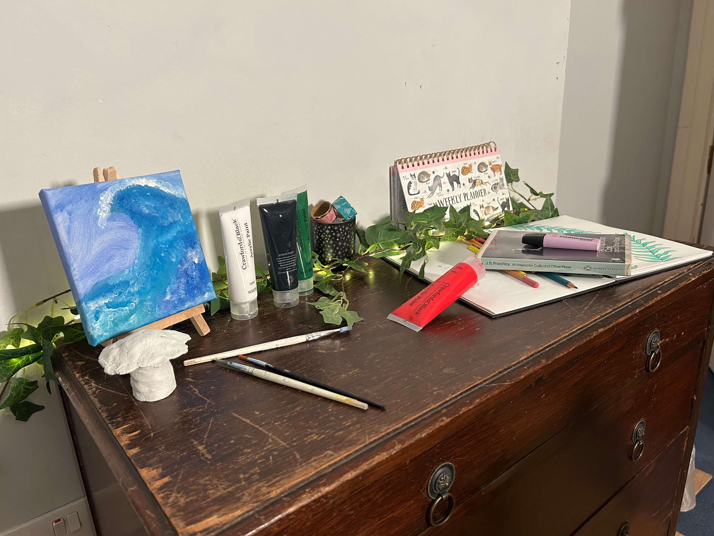

Desk Area: As she loves painting, drawing, clay and all things creative. I knew that Lucy would have a space in her room dedicated to her creative passions. She upcycles her nans old dresser so she can have more storage while also having a space to do her art projects.
Paintings: Lucy loves art and wanted this to be showcased in her room, therefore I put one of her paintings on an easel on her desk where she can use it as room decoration but also showcase her beautiful artwork.
Unfinished Projects: Every artists has unfinished projects and I wanted to display that. Lucy likes to work with lots of art mediums. Therefore I placed an unfinished clay project on her desk.
Paint and Paint Brushes: With her being an artist there was obviously going to be paint on her desk, I left some of the bottles open to seem as though she is still using them whereas other were more neatly arranged to where they live on her desk.
Inspector Calls: Another one of Lucys passion is theatre and plays. She has done a bit of acting herself but she really enjoys watching plays and sometimes uses them as inspiration for her artwork. One of her favourites is inspector calls.
Desk Clutter: Every desk is not complete without a bit of desk clutter. Pens dotted around, the odd planner and other stationary on the desk.
Sketchbook: I also wanted her to have a sketchbook on the desk where she does lots of her artwork for her course.